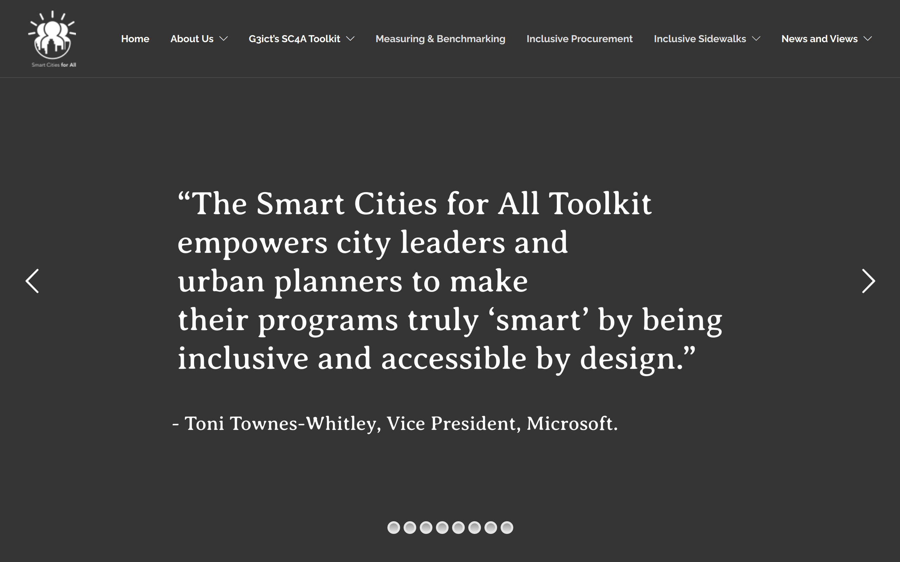

Useful Links
Links that are useful for local community planning and involvement.
Right now this is just a semi-organized bag of links. I will work through these for better organization and hopefully add some ratings to the links.
Transportation
Housing and Zoning
- National Multifamily Housing Counsel: https://housingtoolkit.nmhc.org/
- Obama White House: https://obamawhitehouse.archives.gov/sites/whitehouse.gov/files/images/Housing_Development_Toolkit%20f.2.pdf

- League of WI Municiplities: https://lwm-info.org/DocumentCenter/View/5566/WI-Zoning-Guide-Final-2-2022

- Organisation for Economic Cooperation and Development (OECD): https://www.oecd-ilibrary.org/sites/b453b043-en/index.html?itemId=/content/publication/b453b043-en&_csp_=6c2144a214b333aaac200b082e70ed53&itemIGO=oecd&itemContentType=book
- PolicyLink: https://www.policylink.org/resources-tools/affordable-housing

- Homestead: https://www.myhomestead.com/sb9-city-guide
- US Steven’s Point: https://www3.uwsp.edu/cnr-ap/clue/Pages/publications-resources/Zoning.aspx
Smart City
- Boston Smart City: https://monum.github.io/playbook/
- US Digital Services: https://playbook.cio.gov/

- Nokia / Machina: https://pages.nokia.com/T003V0-what-are-cities-doing-to-be-smart.html
- Smart Cities for All: https://smartcities4all.org/
 - Dustin Haisler: https://www.dustinhaisler.com/smart-cities
- CTIA represents the U.S. wireless communications industry: https://api.ctia.org/wp-content/uploads/2020/02/CTIA-Smart-Cities-Playbook.pdf

Economic
- Housing and Urban Development (HUD): https://www.hudexchange.info/resource/2376/cdbg-economic-development-toolkit/
Election
- Milwaukee election Commission: https://city.milwaukee.gov/election/Helpmilwaukeevote/TrainingPage
Other
- League of WI Municiplities: https://www.lwm-info.org/31/Resources
Last modified July 17, 2022: Add image preview for links (d5a0fa4)